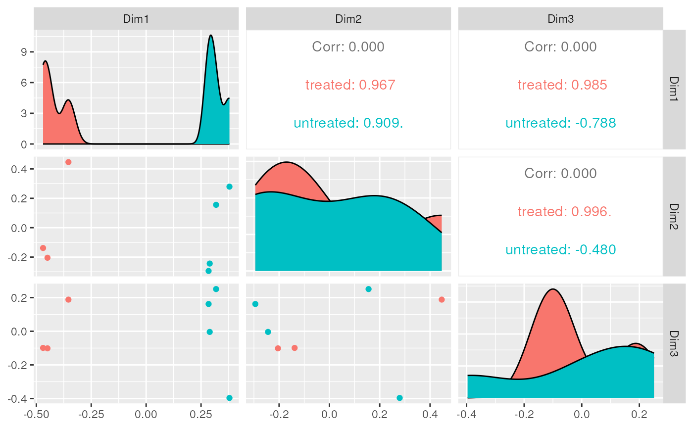
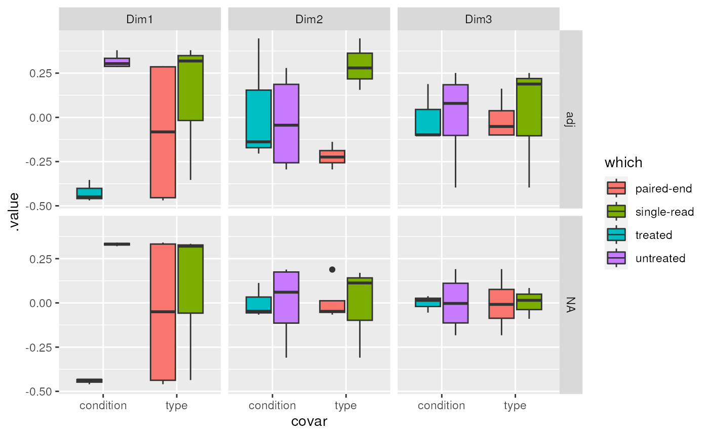

Manuscript code - differential feature abundance
Stefano Mangiola
2021-11-04
Source:vignettes/manuscript_differential_transcript_abundance.Rmd
manuscript_differential_transcript_abundance.RmdThis decument includes the code used for the manuscript, for the differential feature abundance.
pasCts = system.file("extdata",
"pasilla_gene_counts.tsv",
package = "pasilla",
mustWork = TRUE)
pasAnno = system.file(
"extdata",
"pasilla_sample_annotation.csv",
package = "pasilla",
mustWork = TRUE
)
cts = as.matrix(read.csv(pasCts, sep = "\t", row.names = "gene_id"))
coldata = read.csv(pasAnno, row.names = 1)
coldata = coldata[, c("condition", "type")]
# Create tidybulk object
counts =
cts %>%
as_tibble(rownames = "feature") %>%
pivot_longer(names_to = "sample",
values_to = "count",
cols = -feature) %>%
left_join(
coldata %>%
as_tibble(rownames = "sample") %>%
mutate(sample = gsub("fb", "", sample))
) %>%
mutate_if(is.character, as.factor)
# Create a tt object with unique raw and normalised counts
tt_scaled <-
tidybulk(counts, sample, feature, count) %>%
aggregate_duplicates() %>%
identify_abundant() %>%
scale_abundance()
# Plot count densities
tt_scaled %>%
pivot_longer(
c(count, count_scaled),
values_to = "count",
names_to = "Normalisation"
) %>%
ggplot(aes(count + 1, group=sample, color=type)) +
facet_grid(~Normalisation) +
geom_density() +
scale_x_log10()
# Reduce data dimensionality with arbitrary number of dimensions
tt_mds <- tt_scaled %>% reduce_dimensions(method="MDS", .dims = 3)
# Plot all-vs-all MDS dimensions
tt_mds %>%
pivot_sample() %>%
GGally::ggpairs(columns = 7:9, ggplot2::aes(colour=condition))
# Adjust for visualisation
tt_adj <- tt_mds %>% adjust_abundance(~ condition + type)
# Visualise the association between reduced dimensions and factors
tt_mds_adj_mds <-
tt_adj %>%
filter( count_scaled_adjusted %>% is.na %>% `!`) %>%
# Calculate reduced dimensions on the adjusted counts as well
reduce_dimensions(
.abundance = count_scaled_adjusted,
method="MDS", .dim = 3
)
# Data manipulation and visualisation
tt_mds_adj_mds %>%
pivot_sample() %>%
# First level reshaping
pivot_longer(contains("Dim"), names_to = "Dim", values_to = ".value") %>%
separate(Dim, c("Dim", "Adj"), sep="\\.") %>%
mutate(Adj = ifelse(Adj == "y", "non", "adj") %>% factor(c("scaled", "adj"))) %>%
# Second level reshaping
pivot_longer(c(type, condition), names_to = "covar", values_to = "which") %>%
# Visualise the integrative plot
ggplot(aes(y = .value, x = covar, fill = `which`)) +
geom_boxplot() +
facet_grid(Adj ~ Dim)
tt_test <- tt_adj %>% test_differential_abundance(~ condition + type)
# MA plot
tt_test %>%
keep_abundant() %>%
pivot_transcript() %>%
# Subset data
mutate(significant = FDR<0.05 & abs(logFC) >=2) %>%
mutate(feature = ifelse(significant, as.character(feature), NA)) %>%
# Plot
ggplot(aes(x = logCPM, y = logFC, label=feature)) +
geom_point(aes(color = significant, size = significant, alpha=significant)) +
geom_text_repel() +
scale_color_manual(values=c("black", "#e11f28")) +
scale_size_discrete(range = c(0, 2)) 
tt_test %>%
# Select top genes and reshape data
inner_join( arrange((.), PValue) %>% distinct(feature) %>% head(6)) %>%
# High level reshaping of the data.
# All three count columns are shaped as two columns:
# (i) the columns name and (ii) the value of those columns
pivot_longer(
c(count, count_scaled, count_scaled_adjusted),
names_to = "Stage", values_to = "count"
) %>%
# This allows the faceted plot
ggplot(aes(x = Stage, y = count + 1, fill = condition)) +
geom_boxplot() +
facet_wrap(~feature) +
scale_y_log10()